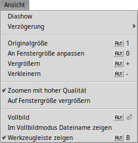

| Index |
| Datei Edit Blättern Bild Ansicht Attribute Tastenkürzel |
 ShowImage
ShowImage
| Deskbar: | kein Eintrag; wird über Doppelklick auf eine entspechende Datei aufgerufen. | |
| Ort: | /boot/system/apps/ShowImage | |
| Einstellungen: | ~/config/settings/ShowImage_settings |
Mit ShowImage lassen sich Bilder in allen Formaten anzeigen, die durch Translatoren unterstützt werden. Neue Formate werden automatisch erkannt, sobald ihr Translator installiert wurde. So geschah das zum Beispiel für Haikus Vektoricon-Dateien, WonderBrush-Dateien oder als WebP-Bilder weitere Verbreitung fanden.
ShowImage bietet keine Bearbeitungsmöglichkeiten per se, es kann allerdings eine rechteckige Auswahl erstellt und in einem beliebigen Format abgespeichert werden. Bilder können auch gedreht und gespiegelt werden, dies verändert aber nicht das Bild an sich. Es wird nur ein Attribut an die Datei gehängt, das ShowImage anweist das Bild beim nächsten Mal entsprechend zu drehen oder zu spiegeln.
Gehen wird der Reihe nach durch die Menüs, sparen uns dabei aber die offensichtlichen Menüpunkte.
 Datei
Datei
Das Untermenü zeigt die kürzlich angezeigten Bilder.
Mit dem Menü kann man das aktuelle Bild mit einer beliebigen Anwendung öffnen, die dessen Dateiformat unterstützt.
Aus dem Untermenü wird das Format gewählt, mit dem das aktuelle Bild gespeichert wird..
öffnet die Hintergründe Einstellungen, um das aktuelle Bild für eine oder alle Arbeitsflächen zu verwenden.
Bearbeiten
Ist der aktiv ̵ ebenfalls wählbar mit dem gestrichelten Rechteck Icon in der Werkzeugleiste ̵ lässt sich mit der Maus ein Auswahlrahmen aufziehen, der dann per Drag&Drop auf die Arbeitsfläche oder in irgendeinen Ordner gespeichert werden kann. Macht man das Drag&Drop mit der rechten Maustaste, lässt sich aus einem Menü das Dateiformat bestimmen.
Anstatt extra den Modus zu wechseln, kann man den Rahmen auch mit gehaltener STRG Taste erstellen.
ESC bewirkt das gleiche wie der Menüpunkt .
Blättern
Nachdem ein Bild geöffnet wurde, kann man schnell alle anderen Bilder in dessen Ordner (oder Ergebnisfenster einer Query) durchsehen, indem man ↑/↓ oder ←/→ drückt. Dabei sieht man, wie sich die markierte Datei im Tracker-Fenster mit verändert.
Es besteht die Möglichkeit, schnell den Ordner des aktuellen Bildes zu öffnen und sogar zu dessen übergeordneten Ordner oder Unterordnern zu navigieren. Das funktioniert genauso wie das Navigieren per Untermenüs im Tracker, indem man auf den Info-Teil in der Statusleiste klickt, in dem Größe, Vergrößerungsfaktor und Dateiformat des aktuellen Bilds angezeigt werden.
Unter findet sich eine andere Art von Bilder-Durchsehen: Einige Dateiformate, beispielweise TIFF, können mehrere Seiten in einer Datei unterbringen. Mit Befehlen wie und lassen sich diese Seiten anspringen.
Bild
Im Menü befinden sich die wenigen für einen Bildbetrachter nötigen Befehle zur Bildbearbeitung: Rotieren und Spiegeln von Bildern. Dabei werden die eigentlichen Bilddaten jedoch nicht verändert. Es wird lediglich ein Attribut an die Datei gehängt, damit sie beim nächsten Öffnen gleich automatisch gedreht oder gespiegelt angezeigt wird.
Ansicht

Unter lässt sich eine aller Bilder eines Ordners (oder dem Ergebnisfenster einer Query) starten und dafür eine zwischen 2 und 20 Sekunden einstellen.
Andere Befehle beziehen sich immer auf das aktuell dargestellte Bild (ohne die Fenstergröße zu ändern):
zeigt das Bild mit einem Vergrößerungsfaktor von 100%.
passt das Bild an die Fenstergröße an, zum Beispiel nachdem das Bild gezoomt oder die Fenstergröße geändert wurde.
und ändert die Ansicht in 10%-Schritten. Auch mit dem Mausrad lässt sich zoomen. Ist ein Bild größer als das Fenster, lässt sich der Bildausschnitt mit der linken Maustaste verschieben.
Zwei Einstellungen gelten nicht nur für das aktuell dargestellte Bild, sondern bleiben auch beim Durchsehen mehrer Bilder erhalten:
wendet zur Bildverbesserung einen schnellen Filter an, um Stufeneffekte beim Zoom abzuschwächen.
zieht kleinere Bilder auf Fenstergröße auf.
Bilder lassen sich im -Modus darstellen, die Option blendet den Dateinamen immer unten im Bild ein.
Mittels werden die Bedienelemente aus- und eingeblendet:

Von links nach rechts: Vorheriges Bild, nächstes Bild, Diashow (im Vollbildmodus), Auswahlmodus, Originalgröße, an Fenstergröße anpassen, vergrößern, verkleinern, vorherige und nächste Seite (für Dateiformate wie TIFF, die mehrere Seiten enthalten können).
Die meisten der oft benutzten Befehle erscheinen beim Rechtsklick auf ein Bild auch in einem Kontextmenü. Das ist besonders praktisch im Vollbildmodus.
Attribute
Hier lässt sich für das aktuelle Bild eine zwischen 1 und 10 vergeben, oder die damit das Bild wieder als "unbewertet" (= "0") erscheint.
Im Tracker wird die Bewertung in einer Attributspalte "Rating" als eine Reihe von Sternen dargestellt. Fünf Sterne repräsentieren die 10 möglichen Werte in "Halbstern" Stufen. Beispielsweise wird eine Bewertung von 7 dargestellt als 7 / 2 = 3,5 Sterne: ★★★⯪☆.
Die Bewertung lässt sich auch direkt in Tracker vornehmen: Datei auswählen, aus dem Menü wählen und die TAB Taste so oft drücken, bis die "Rating" Spalte erreicht ist. Nun lässt sich der numerische Wert eingeben, der zu einer Sternebewertung wird sobald man RETURN drückt.
Tastaturkürzel
Hier einige der nützlichsten Tastenkürzel:
| ← / ↑ | Vorheriges Bild | |
| → / ↓ | Nächstes Bild | |
| ENTF | In den Papierkorb verschieben | |
| + | Vergrößern | |
| - | Verkleinern | |
| 0 | Originalgröße (100% Zoom) | |
| 1 | An Fenstergröße anpassen | |
| ALT RETURN | Wechsel in/aus Vollbildmodus (auch per Doppelklick) | |
| STRG | Bei gedrückter STRG Taste lässt sich ein Auswahlrahmen aufziehen, ohne extra in den Auswahlmodus wechseln zu müssen. |